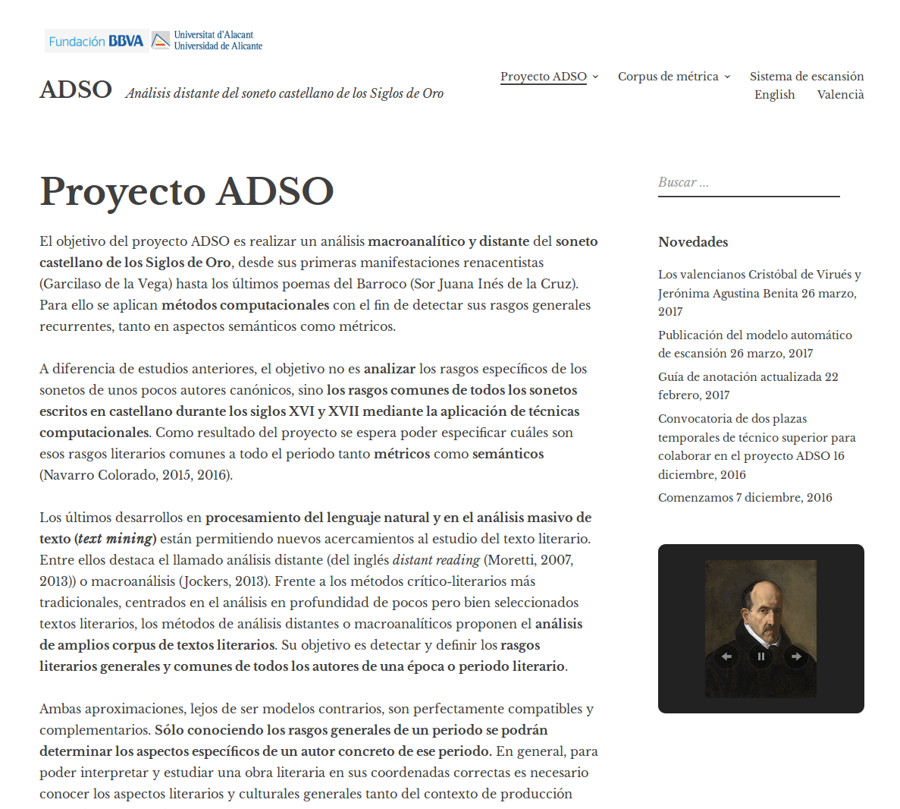
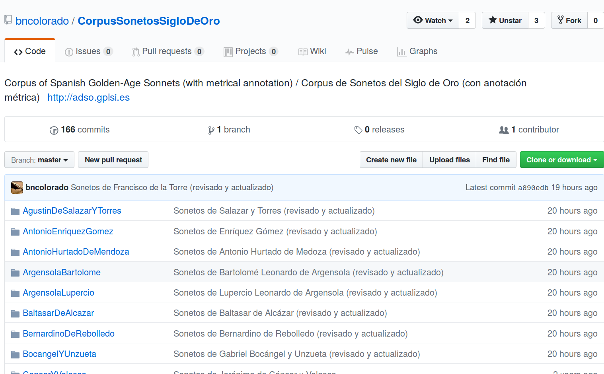
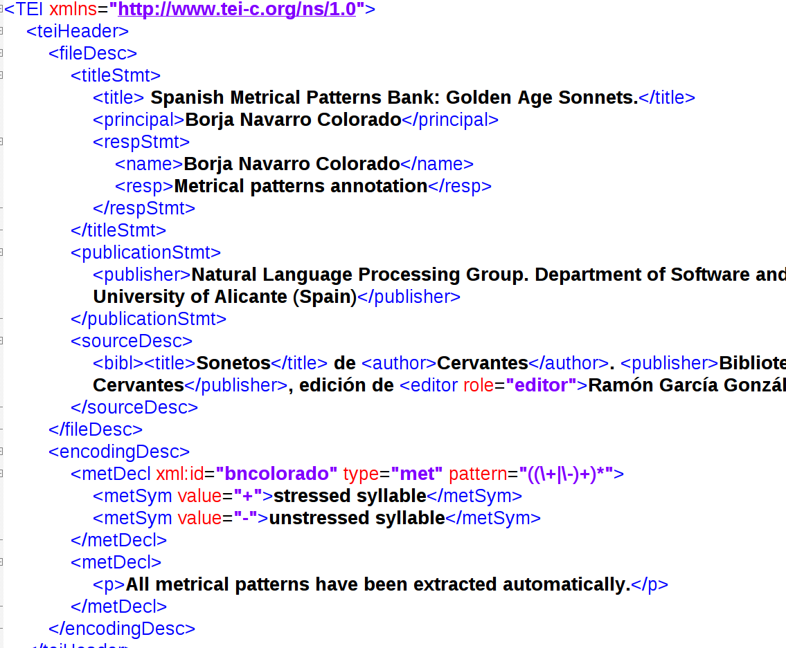
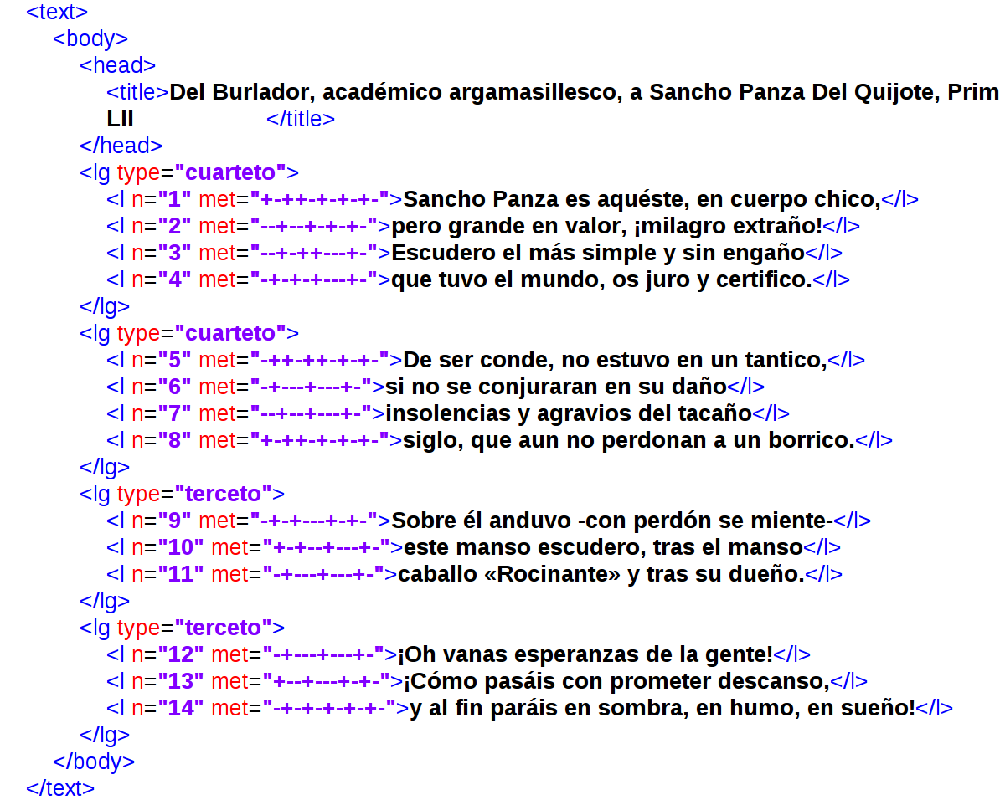
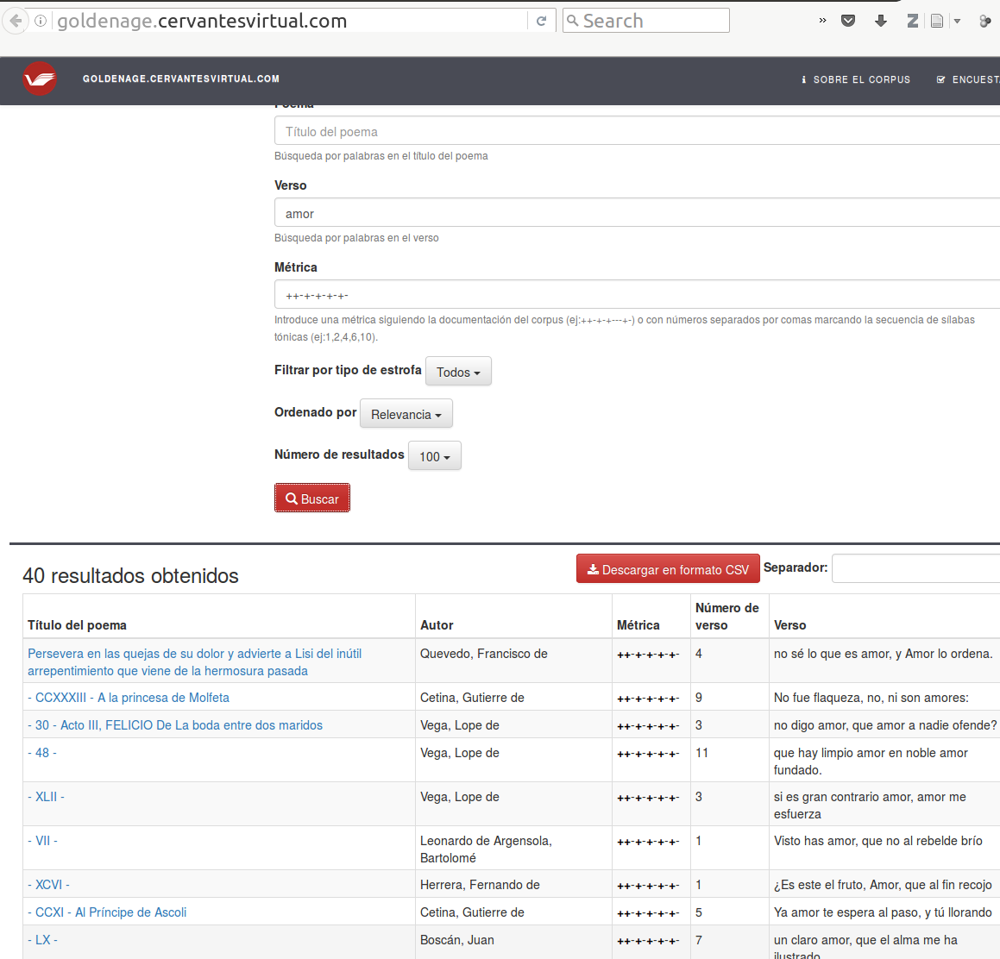

Corpus of Spanish Golden-Age Sonnets
Table of Contents
Abstract
In this paper a TEI corpus with sonnets from the Spanish Golden-Age is reviewed. Some of the 52 authors represented in the collection are Cervantes, Lope, Quevedo, Tirso, Calderón or Góngora. In total, the corpus contains more than 5000 sonnets. The project is currently under development at the University of Alicante, Spain. One of the strongest aspects of this corpus is the metrical annotation of each verse. The researchers have already analysed the corpus using topic modelling, a suitable technique for the structure of the collection and the size of the texts. The weakest aspect of this collection is the metadata of the files: the majority of them are redundant and some important aspects (e.g. identifiers of texts, author, collection, source) are missing. The corpus is available as a GitHub repository, a good practice that facilitates cloning all the data, the track of changes and the preservation of the corpus.
General information
The Corpus of Spanish Golden-Age Sonnets is a collection of sonnets in TEI that covers the main canonical Spanish authors from the Golden-Age of the Spanish Literature (16th and 17th Centuries). The Golden-Age or Siglo de Oro (also called Edad de Oro or Siglos de Oro) encompasses some of the most important authors of the Spanish Literature like Cervantes, Lope, Quevedo, Tirso, Calderón, Góngora, etc. The sonnet represents one of the most important lyric genres of this period.

The collection

The creators decided to encode every sonnet as a single file, grouping the works of the same author in a single folder (two folders in the case of Lope, who has 1346 sonnets). Thinking of usage scenarios, this makes the collection a perfect use case for Topic Modeling, for instance, since the texts are already offered in small and homogeneous units. The authors have already published a paper on the topic (Navarro Colorado 2015) that shows what kind of research questions could be applied: topical patterns in groups of authors or periods, or an analysis of the outcome of clustering each author's sonnets. Other kinds of analysis, e.g. stylometry for authorship attribution, or ways of utilization such as reading would require to combine different files into a single file or a conversion to other formats. But since the corpus is available and uses standard technologies, a researcher with programming skills wouldn't have many troubles.
This corpus aims to create the most representative collection of sonnets for the Spanish 16th and 17th centuries in order to analyse them, especially their rhythmical structure. Unlike similar repositories for other subgenres created in Spain, this repository has published all its data in the TEI format.
Structure of the corpus
Regarding the structure of the corpus, the only criterion mentioned in the documentation is that for every author at least 10 sonnets are included, which could be found in the section "Biblioteca del Soneto"4 of the Biblioteca Digital Cervantes Virtual (that I will just call Cervantes Virtual from now on), and which is one of the biggest collections of Spanish texts in HTML created on the basis of digitizations. That makes this corpus a compilation of the sonnets found in Cervantes Virtual where a specific but arbitrary print edition of a work is digitized, encoded in TEI and published only as HTML. So one of the main selection criteria of this corpus is the opportunism of having all these texts already published and available from a single source. Under these terms, it is questionable whether this collection actually represents the population of the sonnets of the period. The corpus contains more than 5000 sonnets from 52 authors. The amount of tokens is not given, but the fixed structure of the genre makes this information less important than for other genres (e.g. novel). The size of the collection seems appropriate in order to analyse it with quantitative methods and it represents the largest collection of Spanish poetry that I am aware of.
The corpus is divided into subcorpora of single authors, whose names are encoded in both the names of the folders and the XML files, the latter together with a numerical identification. The amount of sonnets for each author varies greatly, from 10 (e.g. of Cristobal de Virués, Fray Luis de León) to several hundreds (e.g. of Fernando de Herrera, Quevedo or Lope de Vega).
Structure of the files
As mentioned before, the fact that all the texts come from
Cervantes Virtual, is described very briefly on the project website.
For that digital library, a large amount of texts has been encoded in TEI over the
years, but Cervantes Virtual has been always reluctant either to publish
it in other formats than HTML or to facilitate the TEI to other researchers. Although
the ADSO project and Cervantes Virtual are based at the same university,
it seems that the texts have been processed directly from the HTML published on the
web, probably transformed with regular expressions (as many other projects working
with Spanish texts do) and converted to TEI, even though this is not clearly
explained. Thanks to this corpus, the research community has won access to data that
was already encoded in TEI but was inaccessible. The project has also isolated every
sonnet, identified the kind of stanzas and numbered the verses. The most interesting
enrichment that has been done by the project is without doubt the formal annotation
of the rhythmical structure of every verse. Sadly, the recollection of the texts has
also caused the loss of some metadata: in the source, the sonnets are normally
published as a part of a collection of sonnets and usually every sonnet is numbered.
Here, the relations between the different sonnets are only kept in the source
description (sourceDesc) in the TEI header. For instance, the link to
the primary source in Cervantes Virtual is missing.
metDecl.
Information about the metrical structure is encoded in every
l element in the corresponding @met attribute with a
combination of pluses and slashes, which is explained in the TEI header and follows
the recommendation of the TEI Guidelines. This information has been added
automatically and it is being corrected manually. The editors of the text collection
have published a paper about the the method of scansion (Navarro Colorado 2017).
sourceDesc and the
metDecl elements (if the text has been corrected manually). This
brings up several questions: Should the title in the titleStmt contain
only the title of the whole corpus instead of the text encoded in each file (e.g. of
each sonnet)? Shouldn't the name of the author also be kept in the
titleStmt and not only in the name of the file? Why is there no
revisionDesc?
Other metadata which would be very useful when working with the collection are missing: the original link to the source at Cervantes Virtual; information and identifiers (through standards like VIAF) about the different stages of the publications (the publication of the digital edition in Cervantes Virtual, the publication of the printed edition digitized by Cervantes Virtual, the publication of the first edition of the text) with the corresponding publication dates; the explicit identification of the number of the poem according to its position in the digitized anthology; and also an identifier that the project itself defines (which could be the same as the name of the file).
The basic text in this project is the sonnet, so each sonnet is encoded in a separate TEI file. This is a different structure from the one of Cervantes Virtual, where a collection of sonnets already published as a book was digitized and encoded as one file and shown in HTML as a group of sonnets, connected by links. These two models have advantages and disadvantages.
On the one hand, the model of one file for each collection organizes the sonnets of each author in their publication context and order. Like this, the works of one author are represented only by some files and not by hundreds of files. In this model the sonnet can still be accessed individually and, through XML technologies like XPath and XSLT, all the sonnets can easily be isolated as single files. The biggest disadvantage of this model is that using a single text element for all the sonnets makes it impossible to encode metadata for each poem.
On the other hand, the model of one file for each sonnet, which has been used for the text collection discussed here, reinforces the individuality of the sonnet and reduces the importance of the collections of the sonnets (as there might be several different collections, some of them created years after the death of the author). Plus, if all the texts have an homogeneous structure and length, it is easier to analyse them for example with techniques like Topic Modeling. One of the biggest disadvantages of this model is that it is harder to keep the information about the original collection each sonnet belonged to, and about where the sonnet was placed in that collection. In the way the collection is structured right now, it would probably be possible but really hard to recreate the structure of whole collections. This could be done by using the name of the collection given in the header of a single sonnet file to associate the sonnet with the corresponding collection and to place it in the collection according to the Roman number given in the header of the text. If the collection would have sub parts grouping some of the sonnets closer together, that information would most probably be lost. In addition, the greatest advantage of this model is actually not exploited by this project: to give specific metadata about each sonnet in the TEI header. In the current state of the corpus (and as I have already said, the project is still ongoing), all the sonnets of a certain published collection share all their metadata, so that all their TEI headers are redundant.
There are different possibilities to fully exploit the advantages and to
balance the disadvantages of these two structural models. First, grouping all the
sonnets originating from the same published collection in a single file, structuring
of course each sonnet as an individual poem. Besides, it would be possible to offer
each poem as a single file as an export version in plain text to facilitate its
analysis. This could be a good way if it is not planned to add specific metadata
about each poem. Secondly: Keeping the structure of a single file for each poem but
add some metadata that identify in an unequivocal way the published collections it
belongs to, its section in the collection (if there are any), and its exact position
in it. Thirdly, and probably the most flexible and structured option, structuring all
the collections of the same writer in a single TEI file with a teiCorpus
element as root element; this would contain other teiCorpus elements for
each collection of sonnets written by this author. Finally, each sonnet can be
encoded as a dedicated element TEI. In doing so, it is possible to add extra metadata
in the child element teiHeader if needed.
Publication
All the data is available through GitHub, which means that the researcher can download everything at once and keep track of every change easily. This reflects a major and laudable change in a positive direction in the way that DH projects have published their data in Spain. The corpus doesn't provide any other format of the data. What would be of great help are metadata in tabular form, ideally one table for authors (with the amount of sonnets and the information about their original publication contexts) and one for the sonnets (with an identifier, the author, the original published collection, the sonnet's number, etc.).
It is very easy to think of re-use scenarios for these data, especially since the Golden Age is the period of the Spanish Literature for which most texts have been digitized, for example in the corpora IMPACT-es diachronic corpus and TESO (amongst others).
Interface (beta)

Preservation
On the GitHub page and on the website of the project, basic documentation is given, although some questions about the creation and its design remain unanswered, as I have already pointed out.
The metrical annotation is under a Creative Commons Attribution-Non Commercial 4.0 International License and the digital texts remain under the copyright of Cervantes Virtual. This double licence situation could confuse people from other projects who want to reuse the data about what exactly they are allowed to do with the corpus as a whole.
The URI of the GitHub repository can be used as a unique identifier to quote the repository, and the version control system of this platform allows to quote or to access any specific state of it. Sadly, the repository doesn't offer a DOI, which would be possible using the integration of GitHub releases and Zenodo DOIs. The project also offers a recommendation about how to cite it, proposing to cite a conference paper (Navarro-Colorado, Ribes Lafoz, Sánchez 2016).
Since the start of the project last year the project members have corrected the annotation of some poems. It can be expected that this corpus will grow or that its metadata will be enriched. GitHub is a good place to keep things in the long term, although the already mentioned integration with Zenodo would improve the archiving of the text collection.
Conclusion
In conclusion, even if it is an ongoing project with expected progress in the next months, this is already a very valuable resource, which allows to analyse the sonnets of the Spanish Literature of the Golden Age, of considerable size and using standard technologies. The researchers have published their data in TEI using GitHub and best practices that can be considered a pioneer work in the year 2015 in the field of Spanish Literature. Its publication is a milestone for the DH landscape in Spanish language and I hope that it will raise expectations for this kind of resources in the field. The project offers a resource of good quality to other researchers wishing to use it: it is open, accessible and citable. However, the documentation of the project is inconsistent: some aspects, like the metrical annotation, have been documented extensively; other aspects, like the design and creation of the corpus, rather poorly. It is one of the biggest open access collections of encoded TEI texts in Spanish, and one of the biggest collections of poetic texts in European languages. The most exceptional feature of this corpus is the metrical annotation of each verse, which is currently under human revision.
Some suggestions have been pointed out in previous sections of this review: more documentation about the design and composition of the corpus is needed. The authors, collections and poems should be identified unequivocally and, if possible, using standards and authority files. In general, the TEI header should offer more metadata (an identifier of the file, chronological information, changes…). The current way of using a single file for each sonnet either leads to the loss of or makes it difficult to access some information, so other ways of structuring the texts would be beneficial.
Bibliography
- Biblioteca Cervantes Virtual. Alicante: Universidad de Alicante, 1999. Web.
- IMPACT-es: Sánchez-Martínez, Felipe et al. ‘An Open Diachronic Corpus of Historical Spanish.’ Language Resources and Evaluation 47.4 (2013): 1327–1342. link.springer.com. Web. Accessed: June 1, 2017. http://www.digitisation.eu/tools-resources/language-resources/impact-es/.
- Navarro Colorado, Borja. ‘A Computational Linguistic Approach to Spanish Golden Age Sonnets: Metrical and Semantic Aspects.’ Proceedings of the Fourth Workshop on Computational Linguistics for Literature. Denver: N.p., 2015. Web.
- Navarro Colorado, Borja. ‘A Metrical Scansion System for Fixed-Metre Spanish Poetry.’ Digital Scholarship in the Humanities (2017): n. pag. CrossRef. Web. 4 May 2017.
- Navarro Colorado, Borja, María Ribes Lafoz, and Noelia Sánchez. ‘Metrical Annotation of a Large Corpus of Spanish Sonnets: Representation, Scansion and Evaluation.’ Proceedings of the 10th Edition of the Language Resources and Evaluation Conference (LREC 2016). Portorož (Slovenia): N.p., 2016. Web.
- TESO: Simón Palmer, María del Carmen. Teatro Español Del Siglo de Oro. Ann Arbor: ProQuest, 1997. Web. https://web.archive.org/web/20161025093021/http://teso.chadwyck.com:80/.
Notes
- https://github.com/bncolorado/CorpusSonetosSigloDeOro Accessed: June 1, 2017. ↑
- https://web.archive.org/web/20170909164015/http://adso.gplsi.es/index.php/es/corpus-de-metrica/. ↑
- https://github.com/bncolorado/CorpusSonetosSigloDeOro/blob/master/GuiaAnotacionMetrica.pdf. Accessed: June 1, 2017. ↑
- https://web.archive.org/web/20161226203745/http://www.cervantesvirtual.com/bib/portal/bibliotecasoneto/. ↑
- https://web.archive.org/web/20170909165825/http://goldenage.cervantesvirtual.com/. ↑
@article{gasonnets,
author = {Calvo Tello, José},
title = {Corpus of Spanish Golden-Age Sonnets},
journal = {RIDE – A review journal for digital editions and resources},
number = {6},
year = {2017},
doi = {10.18716/ride.a.6.4},
url = {https://doi.org/10.18716/ride.a.6.4},
}TY - JOUR
AU - Calvo Tello, José
TI - Corpus of Spanish Golden-Age Sonnets
T2 - RIDE – A review journal for digital editions and resources
IS - 6
PY - 2017
DA - 2017/09
DO - 10.18716/ride.a.6.4
UR - https://doi.org/10.18716/ride.a.6.4
PB - Institut für Dokumentologie und Editorik e.V.
LA - en
ER - Calvo Tello, J. (2017). Corpus of Spanish Golden-Age Sonnets. RIDE – A review journal for digital editions and resources, (6). https://doi.org/10.18716/ride.a.6.4Calvo Tello, José. "Corpus of Spanish Golden-Age Sonnets." RIDE – A review journal for digital editions and resources, no. 6, 2017. https://doi.org/10.18716/ride.a.6.4.Calvo Tello, José. "Corpus of Spanish Golden-Age Sonnets." RIDE – A review journal for digital editions and resources, no. 6 (2017). https://doi.org/10.18716/ride.a.6.4.